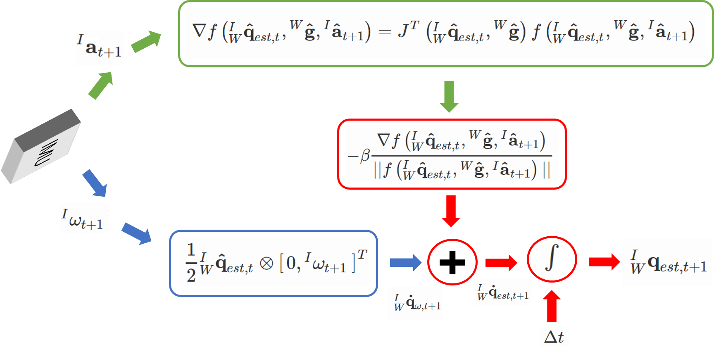

## Mathematical Model of an IMU
If you don't know what an IMU is, I would recommend going through my [What is an IMU? tutorial](tutorials/attitudeest/imu).
Let us assume that our IMU is a 6-DoF one, i.e., it has a 3 axis gyro and a 3 axis acc. A 9-DoF IMU is commonly called MARG (Magnetic, Angular Rate and Gravity) sensor. A simple mathematical model of the gyro and acc is given below.
Gyroscope Model:
$$ \omega = \hat{\omega} + \mathbf{b}_g + \mathbf{n}_g $$
Here, $$\omega$$ is the measured angular velocity from the gyro, $$\hat{\omega}$$ is the latent ideal angular velocity we wish to recover, $$\mathbf{b}_g$$ is the gyro bias which changes with time and other factors like temparature, $$\mathbf{n}_g$$ is the white gaussian gyro noise.
The gyro bias is modelled as $$ \mathbf{\dot{b}}_g = \mathbf{b}_{bg}(t) \sim \mathcal{N}(0, Q_g) $$ where $$ Q_g$$ is the covariance matrix which models gyro noise.
Accelerometer Model:
$$ \mathbf{a} = R^T(\mathbf{\hat{a}} - \mathbf{g}) + \mathbf{b}_a + \mathbf{n}_a $$
Here, $$\mathbf{a}$$ is the measured acceleration from the acc, $$\mathbf{\hat{a}}$$ is the latent ideal acceleration we wish to recover, $$R$$ is the orientation of the sensor in the world frame, $$\mathbf{g}$$ is the acceleration due to gravity in the world frame, $$\mathbf{b}_a$$ is the acc bias which changes with time and other factors like temparature, $$\mathbf{n}_a$$ is the the white gaussian acc noise.
The acc bias is modelled as $$ \mathbf{\dot{b}}_a = \mathbf{b}_{ba}(t) \sim \mathcal{N}(0, Q_a) $$ where $$ Q_a$$ is the covariance matrix which models acc noise.
Here the orientation of the sensor is either known from external sources such as a motion capture system or a camera or estimated by sensor fusion.
## Kalman Filter
Before we start talking about the Kalman Filter (KF) formulation, let us formally define coordinate axes we will use. Let the letters $$I, W, B$$ denote inertial, world and body frames respectively. Generally $$B$$ and $$I$$ are the same but they don't have to be. A pre-subscript denotes the source coordinate frame and a pre-superscript denotes the destination coordinate frame. For eg., $${}^{B}_{A}X$$ transforms $$X$$ from coordinate frame $$A$$ to $$B$$. If only a pre-superscript is present, it means that the quantity was measured and is represented in the same coordinate frame represented by the pre-superscript.
The desired output is to estimate the attitude/angle/orientation of the IMU sensor in the world frame, i.e., estimating $$[\phi, \theta, \psi]^T$$ which is commonly called **Roll, Pitch** and **Yaw** respectively. These are commonly interchanged with **Euler Angles**. However they **ARE NOT THE SAME**. Euler Angles can vary in convention and is generally chosen from 12 unique combinations. For our discussion we'll use Z-Y-X Euler Angles which we'll also refer to as Roll, Pitch and Yaw for X, Y and Z axes respectively. For a detailed explanation [refer to this awesome explanation by Peter Corke](https://petercorke.com/wordpress/roll-pitch-yaw-angles).
In any of the filters we looked at before there was a tradeoff parameter which determined when the filter should trust which sensor more (gyro or acc). However, these parameters didn't have much physical significance and is hard to tune. Also, it seems that changing these parameters at every time instant would yield the best result. A **Kalman Filter** (KF) does this in a theoretically optimal fashion.
A KF formulates this problem (state estimation or attitude estimation in our case) as minimizing a quadratic cost function with respect to the latent correct space and the estimated space. This cost function includes the sensor noise (how much should you trust each sensor) as well as the underlying dynamics of the system (is the IMU placed on a car/quadrotor/hand-held). What if you don't really know where the sensor is going to be used? The answer is simple - you craft a generic enough system dynamics model which would work "well" in most scenarios.
The aim of a KF is to estimate a **state** (a vector of time varying quantities) given the data from one or more sensors and the knowledge of a process model/system dynamics ("how" the system is moving). The magic of a Kalman filter is that it dynamically weights the estimates from both the process model and sensor measurements. Note that the state could have variables not of all which can be measured like the bias of a gyroscope in our case. This can still be used in the process update. Such a state when not all the variables are not obeserved are called **Augmented State**.
A KF operates in two steps, i.e., **process update** and **measurement update**. In the process update, the filter uses measurements from a sensor and underlying system dynamics to predict the future state. This is the best you can do withou a measurement update and the estimated state would drift over time. This drift is directly proportional to the amount of error in the process model (how accurately does your process model resemble the real world?).
In the measurement update, the filter uses measurements from another sensor (hopefully complementary in error to that used in process model) to correct for errors in predicted state. However, none of the sensors used are perfect, how do you trust one more than the other? Simple, you only model the noise charactersistics of each sensor, i.e., the designer's opinion of accuracy of these sensors. You can obtain this from the manufacturer's datasheet or by experimentally obtaining these values.
Now, let's look at the assumptions a Linear Kalman Filter or Kalman filter formulation makes to obtain the mathematical model.
### Assumptions
- All the noise in the system (process noise and measurement noise) is additive white Gaussian noise
- The prior state is modelled by a Gaussian distribution
- Both the process and measurement model is linear
- Markov Property: The future state of the system is conditionally independent of the past states given the current state
### Mathematical Formulation
Now let's look at the mathematical formulation of a Kalman Filter.
The filter starts by taking as input the current state to predict the future state. Now, you might be wondering what a state is? As discussed before, a state in a Kalman filter is a vector which you would like to estimate. In our case, we would like to estimate the attitude of the IMU. Along with estimating the attitude we would also like to estimate the bias of the gyro so that we could get more accurate estimation. Let us denote our state at time $$t$$ by $$\mathbf{x}_t$$ and is given by
$$
\mathbf{x}_t = \begin{bmatrix}
\phi_t \\
\theta_t \\
\psi_t \\
\mathbf{b}_{g,t}
\end{bmatrix}
$$
Here, $$\mathbf{b}_{g,t} \in \mathbb{R}^{3 \times 1} $$ denotes the gyro bias in 3D.
Following are the steps for attitude estimation using a Kalman filter.
- **Step 1: Obtain sensor measurements**
Obtain gyro and acc measurements from the sensor. Let $${}^I\omega_t$$ and $${}^I\mathbf{a}_t$$ denote the gyro and acc measurements respectively.
- **Step 2: Process Update using Gyro Measurements (Prediction)**
Compute the predicted next state using the system dynamics. Note that in a KF each state is characterized by its mean and co-variance matrix.
$$
\hat{\mu_{t+1}} = \mathbf{A}_{t+1}\hat{\mu_{t}} + \mathbf{B}_{t+1}\mathbf{u}_{t+1}$$
$$
\hat{\Sigma_{t+1}} = \mathbf{A}_{t+1}\hat{\Sigma_{t}}\mathbf{A}_{t+1}^T + \mathbf{Q}_{t+1}$$
Here, $$ \mu_t$$, $$\Sigma_t$$ denote the mean and co-variance of the state at time $$t$$ and $$\hat{\mu_{t+1}}, \hat{\Sigma_{t+1}}$$ denotes the estimated mean and co-variance of the state at time $$t+1$$. $$\mathbf{Q}_{t+1}$$ denotes the noise matrix modelling how noisy the system dynamics model is. Here, $$\mathbf{A}_{t+1}$$ denotes the **process/dynamics/system model** which mathematically models how the state changes from $$t$$ to $$t+1$$ and is given below.
$$
\mathbf{A}_{t+1} = \begin{bmatrix}
1 & 0 & 0 & -\Delta t & 0 & 0\\
0 & 1 & 0 & 0 & -\Delta t & 0\\
0 & 0 & 1 & 0 & 0 & -\Delta t\\
0 & 0 & 0 & 1 & 0 & 0\\
0 & 0 & 0 & 0 & 1 & 0\\
0 & 0 & 0 & 0 & 0 & 1\\
\end{bmatrix}
$$
Here, \\(\Delta t\\) is the time elapsed between two samples at \\(t\\) and \\(t+1\\). If no correction is given this prediction would drift due to error in process model. The process model in our case models a constant attitude within the small time instant but the bias integrates over this small time $$\Delta t$$. Also, $$\mathbf{u}_{t+1}$$ represents the input/process vector (in our case this is the vector of euler angle velocities of the IMU in world frame) and is given by
$$
\mathbf{u}_{t+1} = \begin{bmatrix}
\dot{\phi}\\
\dot{\theta}\\
\dot{\psi}\\
\end{bmatrix}
$$
$$
\begin{bmatrix}
\dot{\phi}\\
\dot{\theta}\\
\dot{\psi}\\
\end{bmatrix} = \mathbf{R}^{-1} {}^I\omega_t
$$
$$
\mathbf{R} = \begin{bmatrix}
\cos \theta & 0 & -\cos \phi \sin \theta \\
0 & 1 & \sin \phi \\
\sin \theta & 0 & \cos \phi \cos \theta
\end{bmatrix}
$$
$$\mathbf{B}_{t+1}$$ denotes the mapping of the input vector to the state vector and is given by
$$
\mathbf{B}_{t+1} = \begin{bmatrix}
\Delta t & 0 & 0\\
0 & \Delta t & 0\\
0 & 0 & \Delta t\\
0 & 0 & 0\\
0 & 0 & 0\\
0 & 0 & 0\\
\end{bmatrix}
$$
Here, the bias is assumed to be not dependent on the attitude which might not be true in real life.
- **Step 3: Measurement Update using Acc Measurements (Fusion or Correction)**
In this step, compute the attitude using acc measurements and use it to obtain the corrected state, i.e., state which is a combination of both the process and measurement steps. This step entails the sensor fusion.
$$
\mathbf{K}_{t+1} = \hat{\Sigma_{t+1}}\mathbf{C}^T \left( \mathbf{C} \hat{\Sigma_{t+1}} \mathbf{C}^T + \mathbf{R} \right)^{-1}
$$
$$
\mu_{t+1} = \hat{\mu_{t+1}} + \mathbf{K}_{t+1} \left( \mathbf{z}_{t+1} - \mathbf{C} \hat{\mu_{t+1}}\right)
$$
$$
\Sigma_{t+1} = \hat{\Sigma_{t+1}} - \mathbf{K}_{t+1}\mathbf{C}\hat{\Sigma_{t+1}}
$$
Here, $$\mathbf{z}_{t+1}$$ denotes the observable state by the sensor (this could be a subset of the full state as in our case). The acc is used to obtain the angles as follows
$$
\phi = \tan^{-1}\left( \frac{a_y}{\sqrt{a_x^2 + a_z^2}} \right)
$$
$$
\theta = \tan^{-1}\left( \frac{a_x}{\sqrt{a_y^2 + a_z^2}} \right)
$$
Here, $$\mathbf{C}$$ denotes the mapping from observed state to full state and is given by
$$
\mathbf{C} = \begin{bmatrix}
1 & 0 & 0 & 0 & 0 & 0\\
0 & 1 & 0 & 0 & 0 & 0\\
0 & 0 & 0 & 0 & 0 & 0\\
0 & 0 & 0 & 0 & 0 & 0\\
0 & 0 & 0 & 0 & 0 & 0\\
0 & 0 & 0 & 0 & 0 & 0\\
\end{bmatrix}
$$
Note that, in our case we don't use the value of $$\psi$$ from the acc readings as it is generally inaccurate. In a real robotic system, the value of $$\psi$$ is obtained from a camera or a compass. The rows of all zeros in $$\mathbf{C}$$ indicate unobservable values in the state vector $$\mathbf{x}$$.
**Repeat steps 1 and 2 for every time instant and step 3 whenever a measurement update from acc is available.** The measurement update is generally run about a factor of magnitude slower than the process update for keeping computation complexity low.
## References
- [IMU Attitude Estimation](http://philsal.co.uk/projects/imu-attitude-estimation)
- [MEAM620 Kalman Filter Notes](https://alliance.seas.upenn.edu/~meam620/wiki/index.php?n=Main.Schedule2015?action=download&upname=2015_kalmanFilter.pdf)
- Nitin J. Sanket. [Orientation Tracking based Panorama Stiching using Unscented Kalman Filter.](https://github.com/NitinJSanket/ESE650Project2/blob/master/Report/ESE650Project2.pdf)
- [Does anyone have a 6-DOF IMU Kalman Filter?](https://www.researchgate.net/post/Does_anyone_have_a_6-DOF_IMU_Kalman_Filter)
Mathematical Model of an IMU
If you don't know what an IMU is, I would recommend going through my
What is an IMU? tutorial .
Let us assume that our IMU is a 6-DoF one, i.e., it has a 3 axis gyro and a 3 axis acc. A 9-DoF IMU is commonly called MARG (Magnetic, Angular Rate and Gravity) sensor. A simple mathematical model of the gyro and acc is given below.
Gyroscope Model:
$$ \omega = \hat{\omega} + \mathbf{b}_g + \mathbf{n}_g $$
Here, \(\omega\) is the measured angular velocity from the gyro, \(\hat{\omega}\) is the latent ideal angular velocity we wish to recover, \(\mathbf{b}_g\) is the gyro bias which changes with time and other factors like temparature, \(\mathbf{n}_g\) is the white gaussian gyro noise.
The gyro bias is modelled as \(\mathbf{\dot{b}}_g = \mathbf{b}_{bg}(t) \sim \mathcal{N}(0, Q_g)\) where \(Q_g\) is the covariance matrix which models gyro noise.
Accelerometer Model:
$$ \mathbf{a} = R^T(\mathbf{\hat{a}} - \mathbf{g}) + \mathbf{b}_a + \mathbf{n}_a $$
Here, \(\mathbf{a}\) is the measured acceleration from the acc, \(\mathbf{\hat{a}}\) is the latent ideal acceleration we wish to recover, \(R\) is the orientation of the sensor in the world frame, \(\mathbf{g}\) is the acceleration due to gravity in the world frame, \(\mathbf{b}_a\) is the acc bias which changes with time and other factors like temparature, \(\mathbf{n}_a\) is the the white gaussian acc noise.
The acc bias is modelled as \(\mathbf{\dot{b}}_a = \mathbf{b}_{ba}(t) \sim \mathcal{N}(0, Q_a)\) where \(Q_a\) is the covariance matrix which models acc noise.
Here the orientation of the sensor is either known from external sources such as a motion capture system or a camera or estimated by sensor fusion.
Madgwick Filter
Before we start talking about the madgwick filter formulation, let us formally define coordinate axes we will use. Let the letters \(I, W, B\) denote inertial, world and body frames respectively. Generally \(B\) and \(I\) are the same but they don't have to be. A pre-subscript denotes the source coordinate frame and a pre-superscript denotes the destination coordinate frame. For eg., \({}^{B}_{A}X\) transforms \(X\) from coordinate frame \(A\) to \(B\). If only a pre-superscript is present, it means that the quantity was measured and is represented in the same coordinate frame represented by the pre-superscript.
The desired output is to estimate the attitude/angle/orientation of the IMU sensor in the world frame, i.e., estimating \({}^{W}_{I}\mathbf{q}\). We use \(\mathbf{q}\) to denote the orientation represented in the form of a
Quaternion. If you don't know much about quaternions, I would highly recommend to read
this Wikipedia article on quaternions.
The Mahony filter is a glorified [Complementary Filter](tutorials/attitudeest/imu) with significant improvements to accuracy without significant markup in computation time. Even today, it remains to be one of the most popular filters used in racing quadrotors where time is money.
The Madgwick filter formulates the attitude estimation problem in quaternion space. The general idea of the Madgwick filter is to estimate \({}^{I}_{W}\mathbf{q}_{t+1}\) by fusing/combining attitude estimates by integrating gyro measurements \({}^{I}_{W}\mathbf{q}_{\omega}\) and direction obtained by the accelerometer measurements. In essence, the gyro estimates of attitude are used as accurate depictions in a small amount of time and faster movements and the acc estimates of attitude are used as accurate directions to compensate for long term gyro drift by integration.
As in
Complementary Filter , the attitude is estimated from the gyro by numerical integration. The attitude estimation from the acc is done by using a gradient descent algorithm to solve the following minimzation problem.
$$
\min_{ {}^{I}_{W}\mathbf{\hat{q}} \in \mathbb{R}^{4 \times 1} } f\left({}^{I}_{W}\mathbf{\hat{q}}, {}^{W}\mathbf{\hat{g}}, {}^{I}\mathbf{\hat{a}} \right)
$$
$$
f\left({}^{I}_{W}\mathbf{\hat{q}}, {}^{W}\mathbf{\hat{g}}, {}^{I}\mathbf{\hat{a}} \right) = {}^{I}_{W}\mathbf{\hat{q^*}} \otimes {}^{W}\mathbf{\hat{g}} \otimes {}^{I}_{W}\mathbf{\hat{q}} - {}^{I}\mathbf{\hat{a}}
$$
Here, \(\mathbf{q}^*\) denotes the conjugate of \(\mathbf{q}\) and \(\otimes\) indicates quaternion multiplication. \({}^{W}\mathbf{\hat{g}}\) denotes the normalized gravity vector and is given by \({}^{W}\mathbf{\hat{g}} = \begin{bmatrix} 0 & 0 & 0 & 1\end{bmatrix}^T\) and \({}^{I}\mathbf{\hat{a}}\) denotes the normalized acc measurements. From now on \(\mathbf{\hat{x}}\) denotes normalized version of \(\mathbf{x}\).
Following are the steps for attitude estimation using a Madgwick filter (Refer to Fig. 1 shown below for an overview of the algorithm).

Fig 1: Overview of Madgwick Filter.
-
Step 1: Obtain sensor measurements
Obtain gyro and acc measurements from the sensor. Let \({}^I\omega_t\) and \({}^I\mathbf{a}_t\) denote the gyro and acc measurements respectively. Also, \({}^I\mathbf{\hat{a}}_t\) denotes the normalized acc measurements.
-
Step 2 (a): Orientation increment from Acc
Compute orientation increment from acc measurements (gradient step).
\( \nabla f\left( {}^{I}_{W}\mathbf{\hat{q}}_{est, t}, {}^{W}\mathbf{\hat{g}}, {}^{I}\mathbf{\hat{a}}_{t+1} \right) = J^T\left( {}^{I}_{W}\mathbf{\hat{q}}_{est, t}, {}^{W}\mathbf{\hat{g}} \right) f\left( {}^{I}_{W}\mathbf{\hat{q}}_{est, t}, {}^{W}\mathbf{\hat{g}}, {}^{I}\mathbf{\hat{a}}_{t+1} \right) \)
\( f\left( {}^{I}_{W}\mathbf{\hat{q}}_{est, t}, {}^{W}\mathbf{\hat{g}}, {}^{I}\mathbf{\hat{a}}_{t+1} \right) = \begin{bmatrix}
2\left( q_2q_4 - q_1q_3\right) - a_x\\
2\left( q_1q_2 + q_3q_4\right) - a_y\\
2\left( \frac{1}{2} - q_2^2 - q_3^2\right) - a_z\\
\end{bmatrix} \)
\( J\left( {}^{I}_{W}\mathbf{\hat{q}}_{est, t}, {}^{W}\mathbf{\hat{g}} \right) = \begin{bmatrix}
-2q_3 & 2q_4 & -2q_1 & 2q_2 \\
2q_2 & 2q_1 & 2q_4 & 2q_3 \\
0 & -4q_2 & -4q_3 & 0\\
\end{bmatrix} \)
Update Term (Attitude component from acc measurements) is given by
\(
{}^{I}_{W}\mathbf{q}_{\nabla, t+1} = - \beta\frac{\nabla f\left( {}^{I}_{W}\mathbf{\hat{q}}_{est, t}, {}^{W}\mathbf{\hat{g}}, {}^{I}\mathbf{\hat{a}}_{t+1} \right)}{\vert \vert f\left( {}^{I}_{W}\mathbf{\hat{q}}_{est, t}, {}^{W}\mathbf{\hat{g}}, {}^{I}\mathbf{\hat{a}}_{t+1} \right) \vert \vert}
\)
Look at green parts in Fig. 1.
Step 2 (b): Orientation increment from Gyro
Compute orientation increment from gyro measurements (numerical integration).
\(
{}^{I}_{W}\mathbf{\dot{q}}_{\omega,t+1} = \frac{1}{2} {}^{I}_{W}\mathbf{\hat{q}}_{est,t}\otimes \begin{bmatrix} 0, {}^{I}\omega_{t+1} \end{bmatrix}^T\)
Look at blue parts in Fig. 1.
Step 3: Fuse Measurements
Fuse the measurments from both the acc and gyro to obtain the estimated attitude \( {}^{I}_{W}\mathbf{\hat{q}}_{est, t+1}\).
\(
{}^{I}_{W}\mathbf{\dot{q}}_{est, t+1} = {}^{I}_{W}\mathbf{\dot{q}}_{\omega, t+1} + {}^{I}_{W}\mathbf{q}_{\nabla, t+1}
\)
\( {}^{I}_{W}\mathbf{q}_{est, t+1} = {}^{I}_{W}\mathbf{\hat{q}}_{est, t} + {}^{I}_{W}\mathbf{\dot{q}}_{est, t+1} \Delta t
\)
Here, \(\Delta t\) is the time elapsed between two samples at \(t\) and \(t+1\). Look at red parts in Fig. 1.
Repeat steps 1 to 3 for every time instant.
In a Madgwick filter, the only tunable parameter is trade off parameter \(\beta\) which determines when the gyro has to take over the acc. Also, the user needs to specify the initial estimates of the attitude, biases and sampling time. The initial attitude can be assumed to be zero if th device is at rest or it has to be obtained by external sources such as a motion capture system or a camera. The bias is computed by taking an average of samples with the IMU at rest and computing the mean value. Note that this bias changes over time and the filter will start to drift over time. The sampling time is the inverse of the operating frequency of the IMU and is specified generally at the driver level.
References